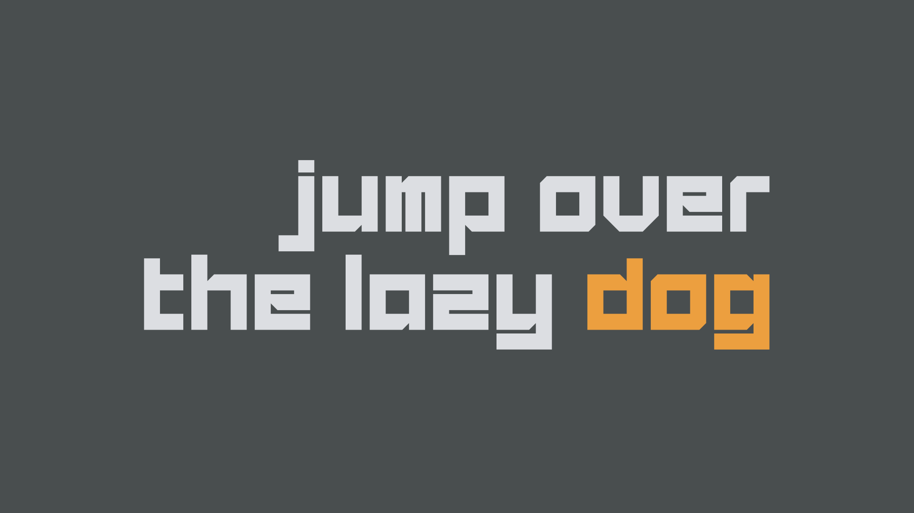
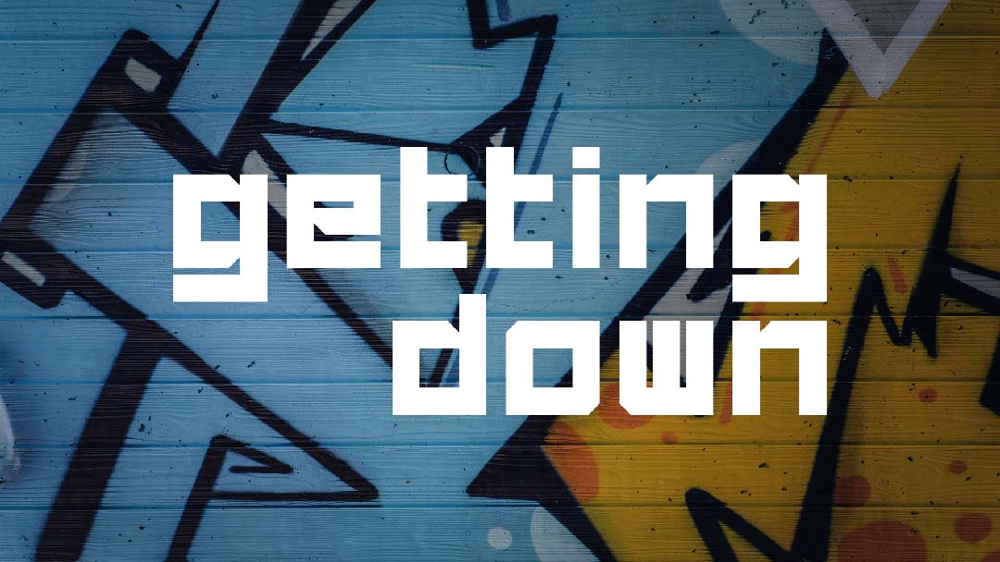
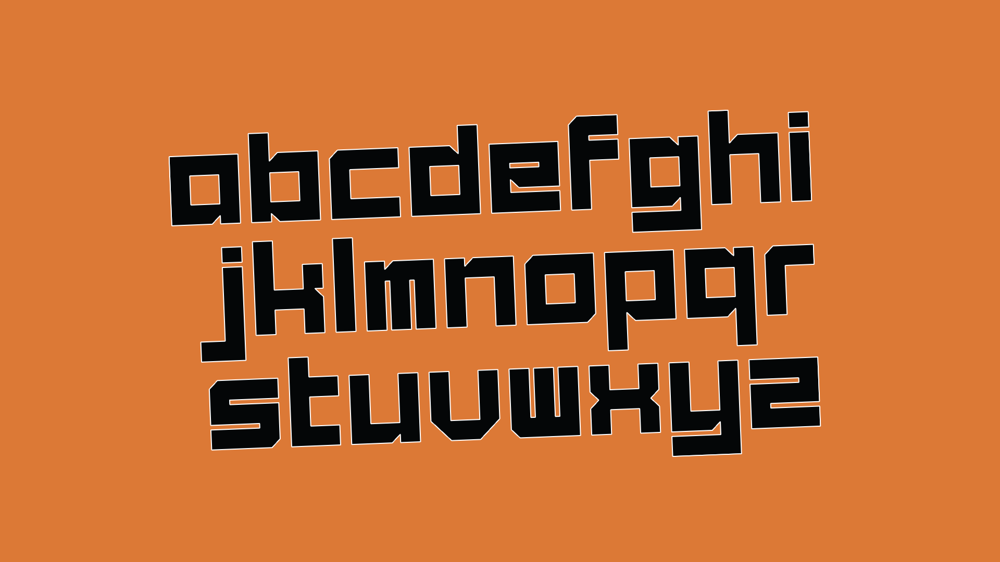

← Return to Homepage — Ecko

Ecko — A Free Font
This A-Z logotype is based on the logo for Marc Eckō's Getting Up: Contents Under Pressure. The game is a hidden gem, originally released on the PS2, about a young graffiti artist. I wanted to find the original logo/font, but after my searches were unsuccessful, I decided to recreate it myself.



Download
Font Details
Released: 2022
Style: Vectorheart
Note: Includes A-Z only
References
Usage Rights
I'm not the original designer of the game logo, this is a fan recreation. Use this font at your own risk!